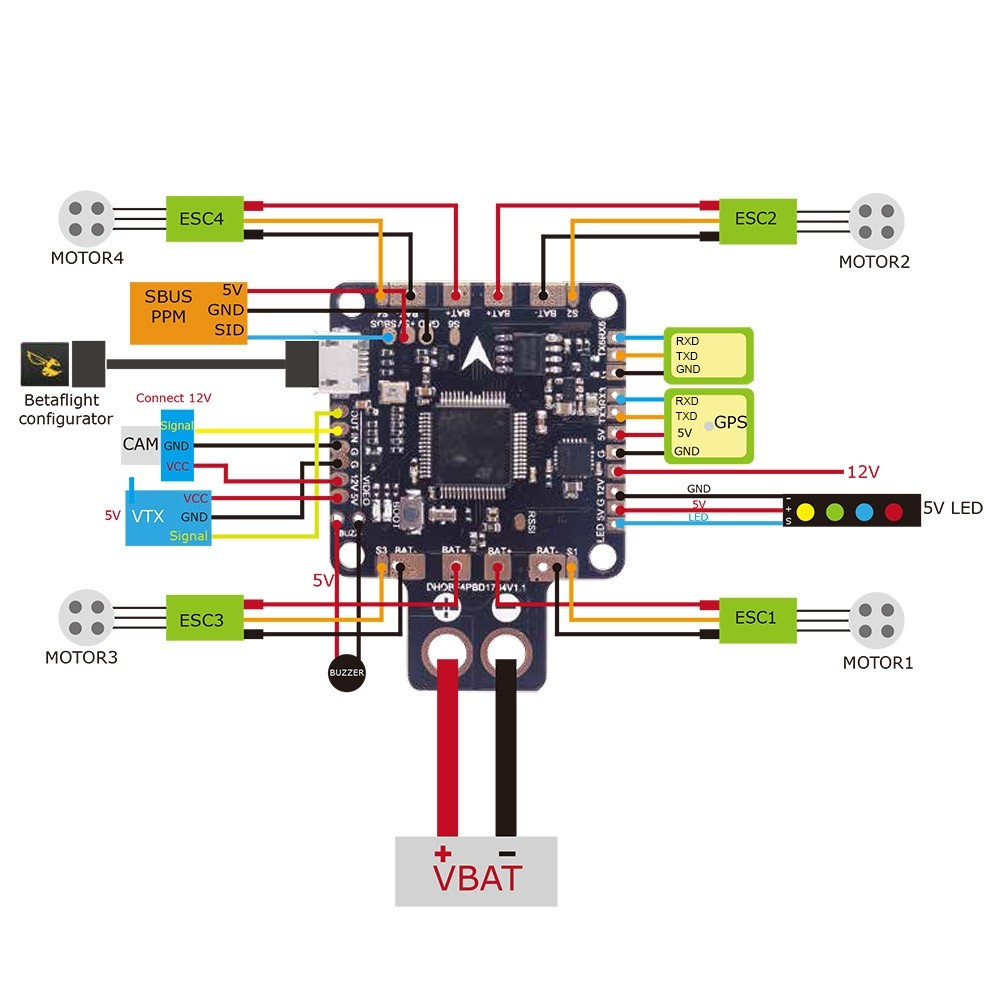

What is Betaflight?
Betaflight is a flight control firmware designed for racing and freestyle drones. It focuses on fast response and precise manual control.
Key Features
- Very fast control loop rates
- Optimized for manual flying
- Supports DShot and advanced ESC protocols
- Easy configuration through Betaflight Configurator
Typical Use Cases
- FPV racing drones
- Freestyle quadcopters
- High-speed agile builds